Projects
2026
Field Recording Workshops with Newham Music and Cody Dock
+
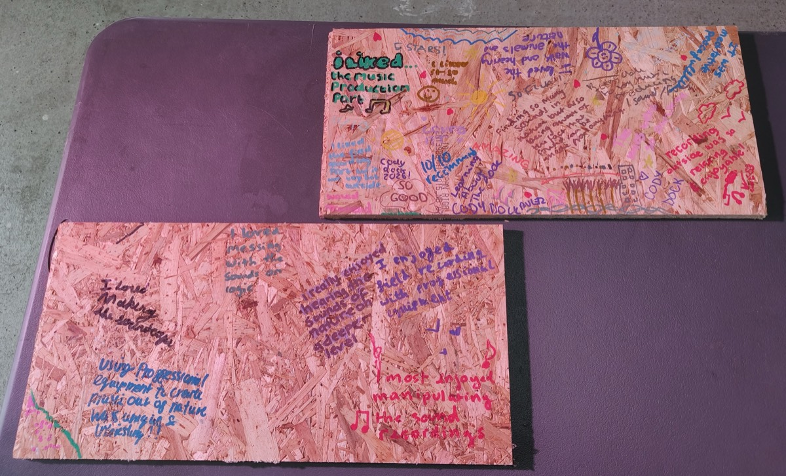
Role Workshop leader, production, mixing
I led three field recording workshops for Newham Music at Cody Dock, an urban nature reserve on the tidal River Lea. Participants were guided around the site by Cody Dock’s ecology team, recorded with professional equipment, then learned to shape their recordings into soundscapes in Logic.
In parallel, I worked with Gabriella Noble, winner of the Newham Music River Recordings open call, to incorporate field recordings from the workshops into her piece, which was presented at Cody Dock’s community open day and the exhibition Art in the Docks.
More: Cody Dock’s post on Instagram and the workshop listing on Youth Music.
2026
Mailros
+
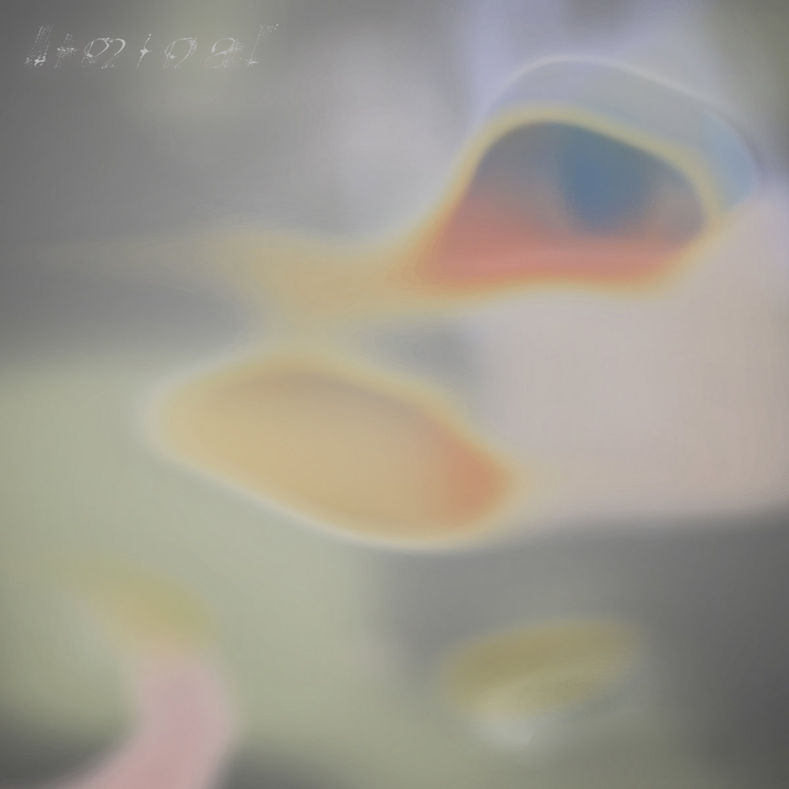
Role Composition, production, mixing
Six-track EP by Infra, released on Oscilla Sound’s LMNL series as LMNL007 on June 12, 2026.
- Artwork by Jelly Works Studio
- Mastered by Ike Zwanikken
2025
Selected Field Recordings: Vol. 1
+
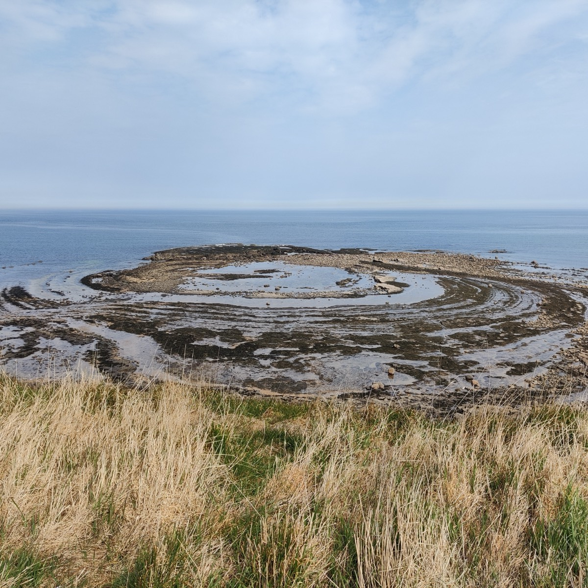
Role Recording, post-production
A selection of favourites from my field recording collection. Released July 29, 2025.
2025
Youth in Parts
+
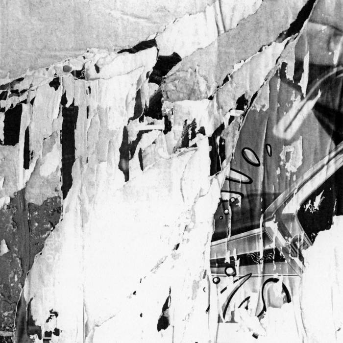
Role Recording, production, mixing
A collaboration between artist Jamie George and Infra. Released April 12, 2025.
2024
Ante
+
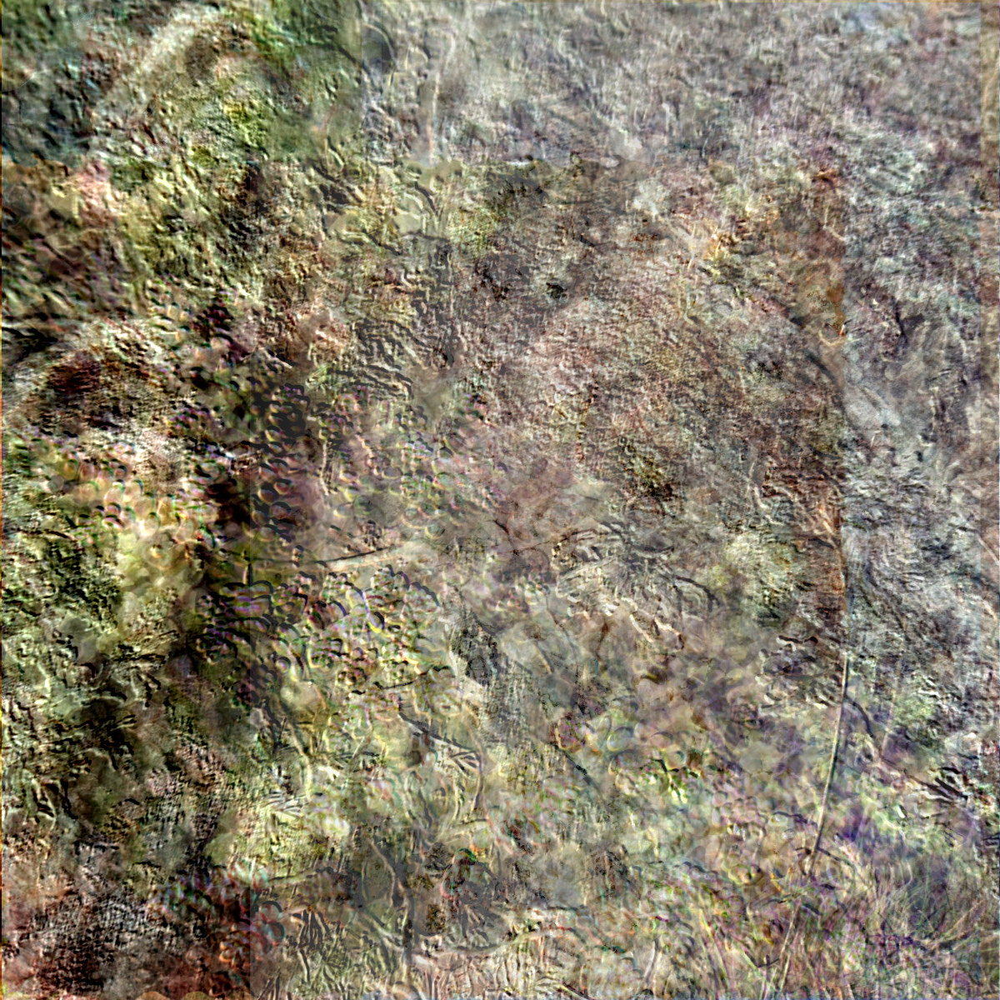
Role Composition, production, mixing
Released December 18, 2024.
- Vocals by Infra
- Produced and mixed by Infra
- Mastered by Addison
- Artwork by @multibrowser
2024
LMNL001
+
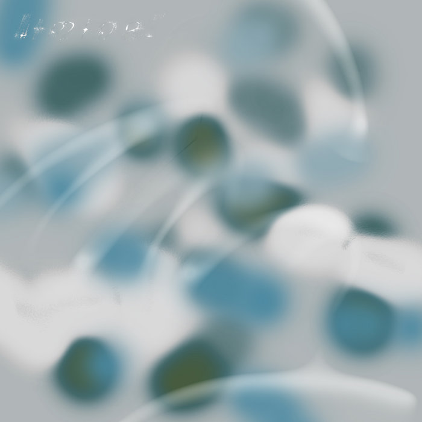
Role Composition, production, mixing
Track 1 on this Oscilla Sound compilation (Liminal VA 001). Released August 2, 2024.
- Artwork by Jelly Works
- Mastered by Ike Zwanikken
2023
For the Dial Beckons
+
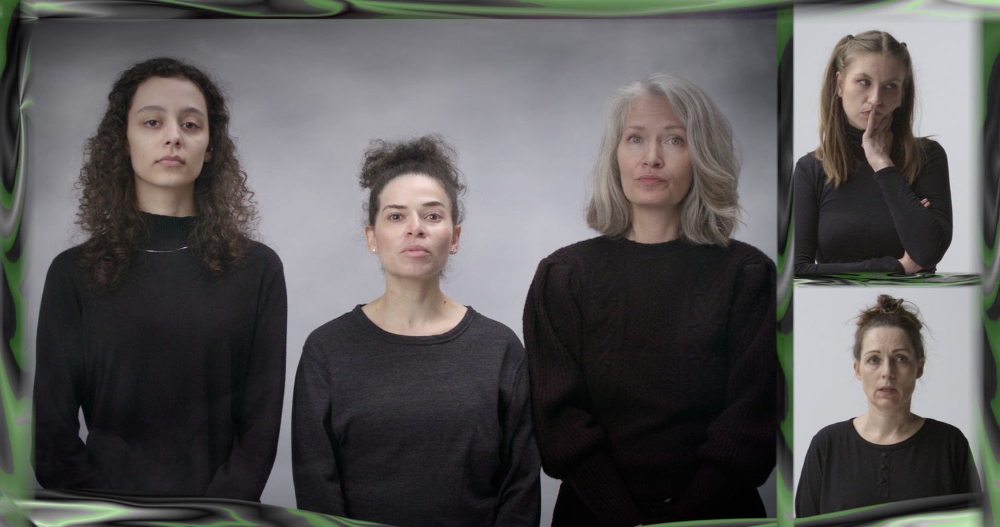
Role Composition, production, mixing
For the Dial Beckons is a film work by Linnea Langfjord Kristensen, for which I made the sound and music.
2022
Lost my way
+
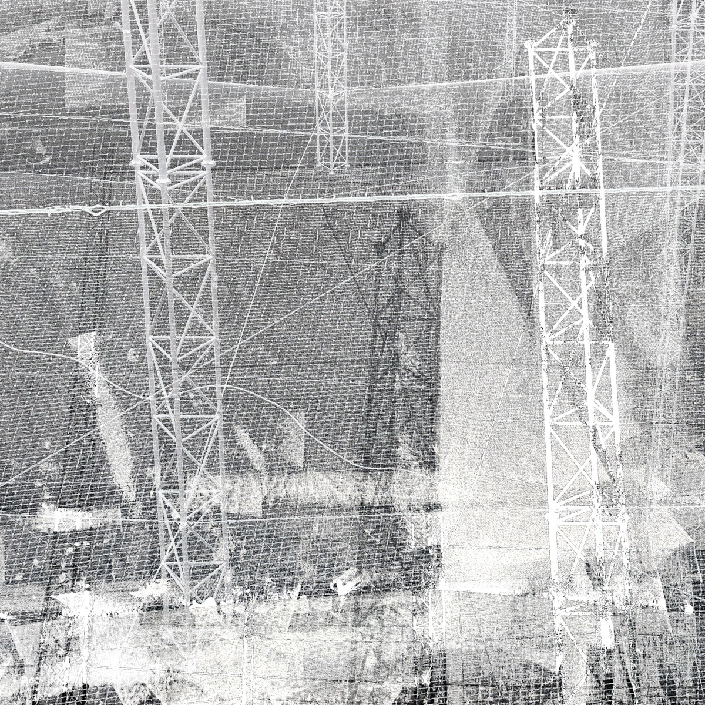
Role Composition, production, mixing
Released December 9, 2022.
- Artwork by @multibrowser
2022
QX Product Launch Video
+
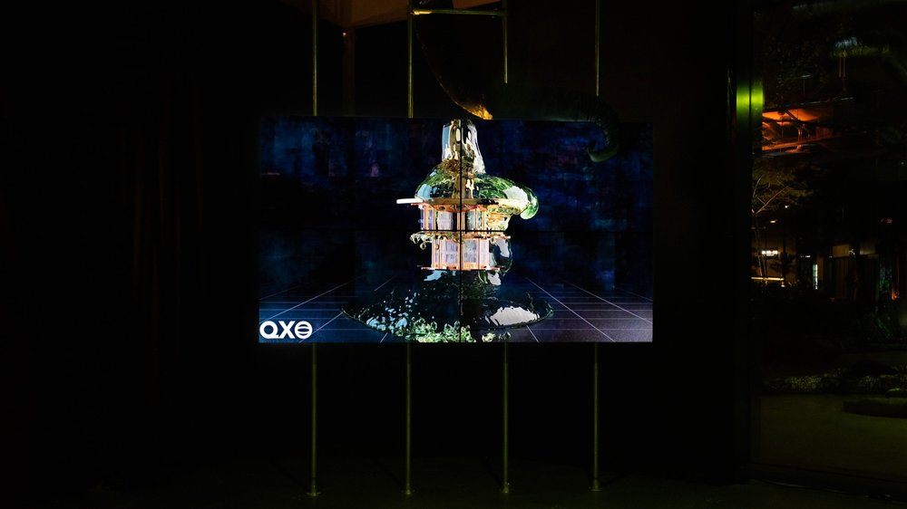
Role Sound design, mixing
Video work by Libby Heaney.
“In The Evolution of Ent-: QX, Libby Heaney imagines QX, ‘Quantum eXperience’, a quantum computing company that parodies the hyperbolic language, commercial aesthetics, and unquenchable greed of Big Tech. [...]
Lying beneath the corporate veneer are quantum glitches and slimy eruptions inviting viewers to consider the fluidity that underpins quantum computing as a way to move away from the binary and capitalist to a plural, shape-shifting landscape of deep interconnections.”
Using stock music and a voiceover provided by the artist, I created a sound track that glitches, distorts and decays into noise as the video progresses. This work was part of The Evolution of Ent-: QX, commissioned and exhibited by Arebyte Gallery in 2022.
2022
The Real
+
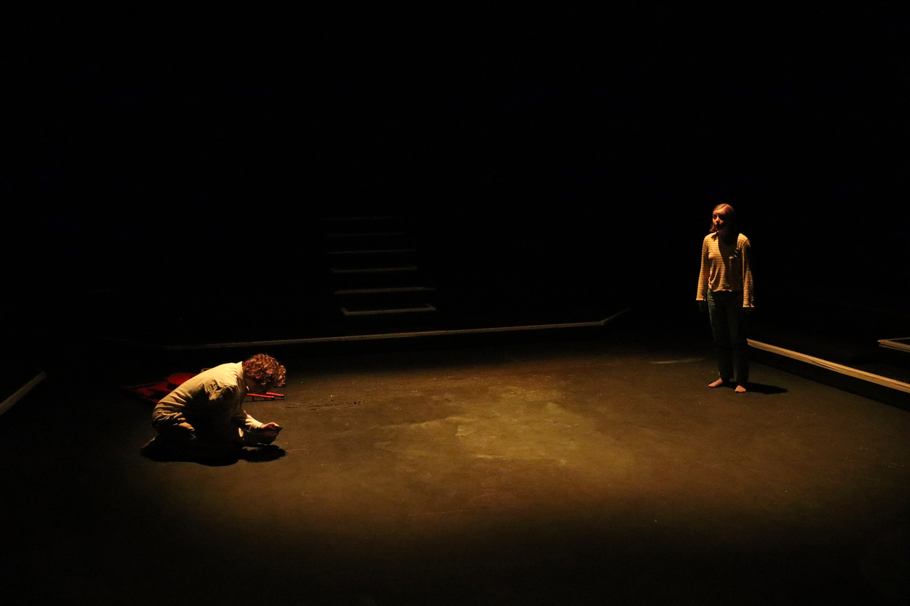
Role Composition, production, mixing
A play by Linnea Langfjord Kristensen, performed at the Cockpit Theatre, London, in September 2022.
Directed by Alan Fielden and performed by Drew Sheridan-Wheeler, Lucy Spreckley, Henriette Laursen, Tom Cray and Meg Lake. I designed the sound.
2020
The Particular
+
Role Composition, production, recording, mixing
A narrative sound work I made with Linnea Langfjord Kristensen in 2020.
This work, mixed in third order ambisonics and rendered here binaurally, was featured at the Klingt Gut symposium in Hamburg in 2021 and won the award for Best Young Artist. Best heard on headphones.
2019
The fold is a fold that makes two and more as it folds
+
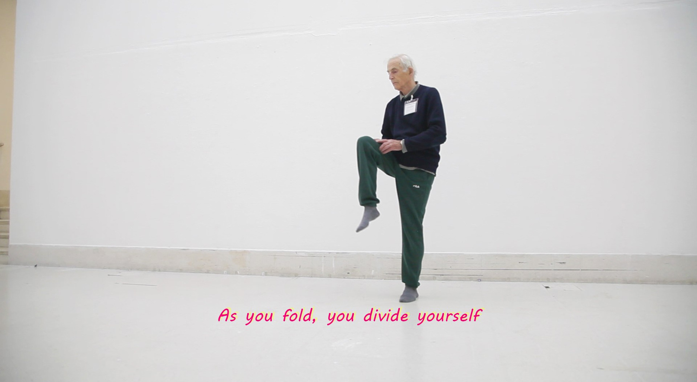
Role Composition, production, mixing
Performance, research, workshop and poem by Linnea Langfjord Kristensen.
A film with music I improvised.
Podcasts
2021–present
Faith at the Frontiers
+
Role Video and audio post-production
A podcast on challenges to the Christian faith. Hosted by Dr Barnabas Aspray and Dr Austin Stevenson.
I edit and produce the sound. The podcast has since moved to video, and I now edit the picture as well.
More: Faith at the Frontiers website and YouTube channel.
2024
Deep Time
+
Role Audio post-production
A six-episode series of the William Temple Foundation Podcast, hosted by Tim Middleton.
I edited and produced the sound.